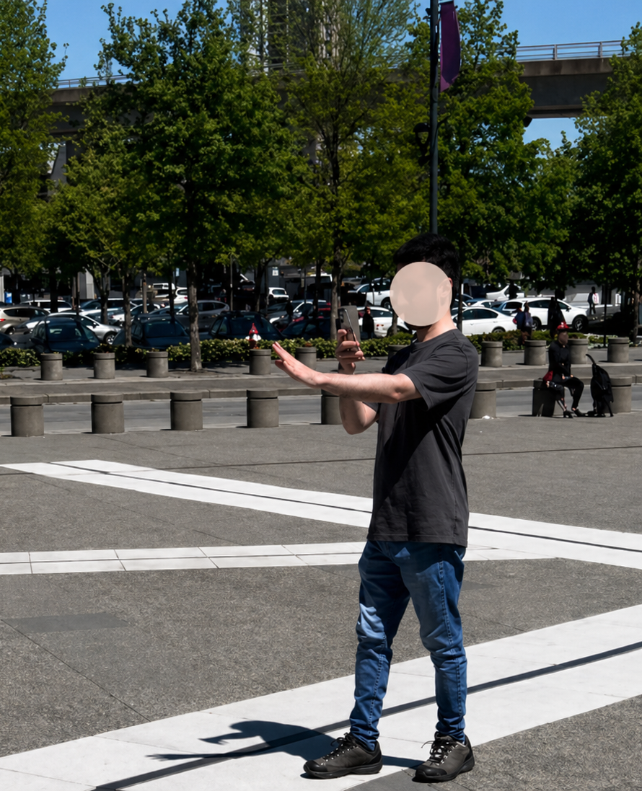
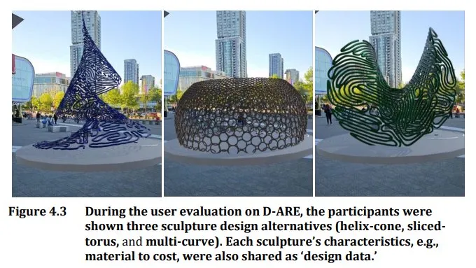
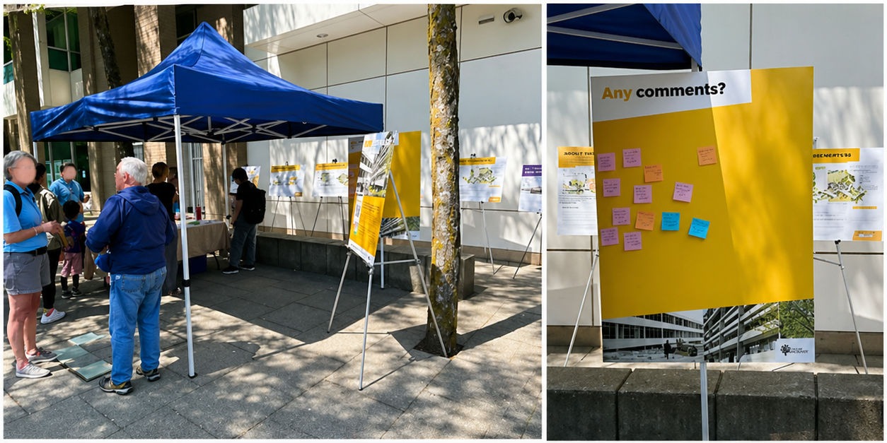
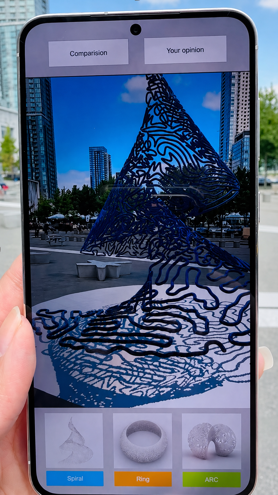
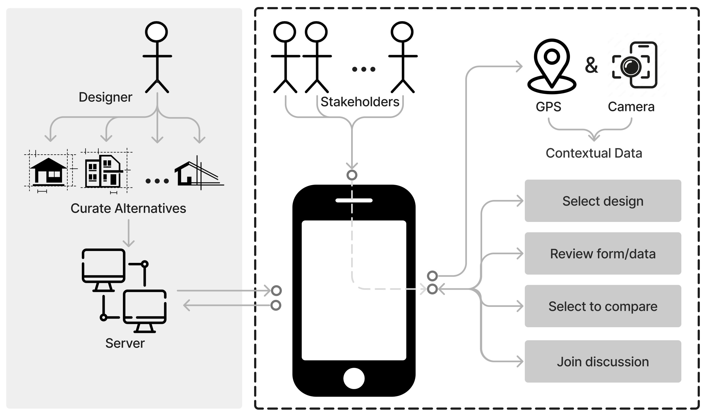
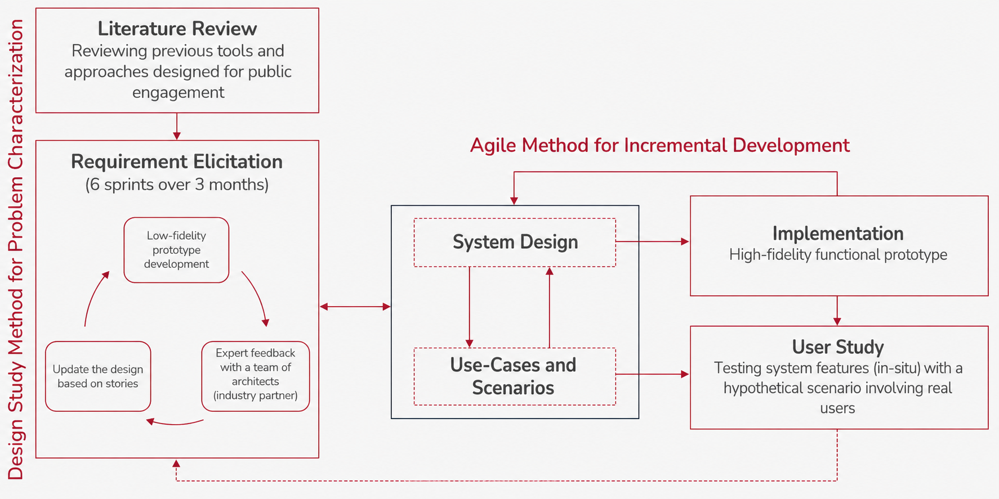
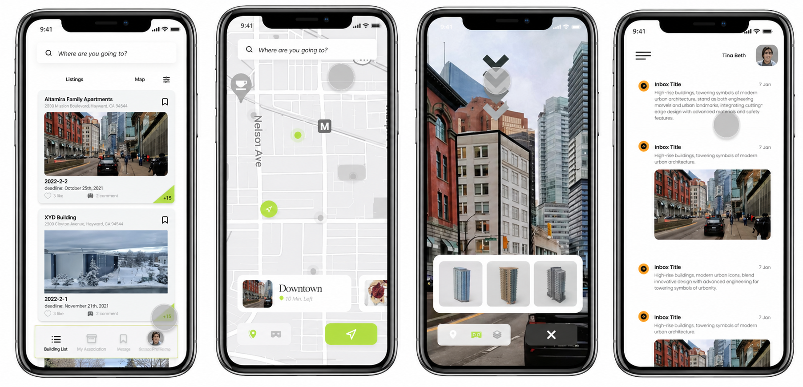
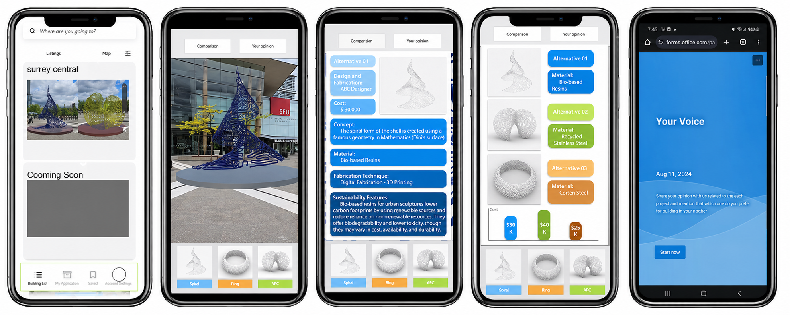
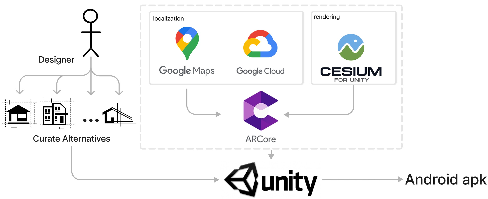

When a new sculpture is proposed for a public plaza, the people who use that space every day rarely get to see what it will actually look like, let alone weigh in on it. D-ARE was built to change that.
D-ARE places 3D design proposals directly in the real environment using location-based AR. Citizens walk up to the plaza, open the app, and interact with the designs at real scale before sharing their feedback.

The study took place at Surrey Central — a busy public plaza outside the SFU Surrey campus. Three sculpture proposals were on the table: a helix-cone, a sliced-torus, and a multi-curve form. Each had different materials, costs, and visual characters. Through D-ARE, participants could see all three placed in the actual site, explore them from any angle, and compare them side by side before sharing their opinion.

The three proposals — helix-cone, sliced-torus, and multi-curve — photographed at Surrey Central where the study took place.
The standard process looks like this: a designer proposes something, the city puts up a poster or holds a town hall, a few people show up, and the project moves forward regardless. The feedback is hard to give because the proposal is hard to understand. Flat renders and technical drawings don't mean much to someone who just walks through the plaza every morning.
The gap isn't about people not caring. It's about not having the right tools to participate.

A public engagement session in Burnaby — sticky notes on a board, printed panels, and a lot of people trying to react to something they can't quite picture.
Designers think spatially. Most people don't read architectural drawings. If someone can't picture what a sculpture will actually look like in their neighbourhood, asking them to evaluate it produces noise, not insight. D-ARE was built to close that gap.

D-ARE places 3D design proposals directly into the real environment using location-based AR. You walk to the site, open the app, and the sculpture appears in front of you, anchored to the ground, at real scale, in the actual plaza where it might one day be built. You can walk around it, get closer, step back, switch between the three alternatives, and read the data behind each one before sharing your take.
See all 3 design proposals placed in the actual location, at real scale.
Walk around, zoom in, change angles and explore from any perspective.
Access material, cost, and sustainability data per design in a separate tab.
Compare all proposals at once across visual and data dimensions.
Submit opinions per proposal and see what other citizens think.
GPS guides users to the exact spot where AR content is anchored.

How D-ARE works at a system level: designers upload alternatives to the server, citizens access them on-site through GPS and camera, then select, compare, and discuss.
This was my master's thesis at Simon Fraser University, which meant I owned the whole project. There was no handoff between a researcher and a designer and a developer. I was all three, which forced a level of coherence across the work that I think shows in the final result.
Literature review, user study design, 20-participant in-situ testing, and post-task survey analysis.
From early whiteboard sessions through lo-fi Figma prototypes to the final AR interaction design.
Built the Android app in Unity with ARCore, integrated Google Maps, Google Cloud, and Cesium for 3D rendering.

The research approach: a design study method for problem characterization combined with an agile process for incremental development, ending in an in-situ user study.
Looked at four existing public engagement tools to understand what was out there and where the gaps were. This shaped the initial requirements for D-ARE.
Ran six design sprints over three months, building lo-fi prototypes in Figma and testing them with a team of architects who acted as an industry partner. Each round updated the design based on what we learned.
Built the high-fidelity Android prototype, integrating GPS, 3D model rendering via Cesium, and Google Cloud for storing and serving the design alternatives.
Deployed the app with 20 participants on-site at Surrey Central. Collected task completion data, interaction patterns, and post-task survey responses to evaluate the design.

The Figma prototype mapped out all three user flows before a single line of code was written. Having that reference made the development phase much cleaner. We knew exactly what we were building and why each screen existed.
Lo-fi prototype in Figma showing the full user flow across listing, AR view, data, comparison, and feedback screens.

Building and testing the prototype in Unity. Left shows the 3D scene in the editor, right shows early AR testing on a phone at the actual site.
Getting location-based AR to work reliably in a real public space is harder than it sounds. Google Maps handles navigation to the site, Google Cloud stores and serves the 3D models, Cesium takes care of precise geospatial positioning, and ARCore does the real-time tracking. Unity brings all of it together and compiles to an Android APK.

The technical stack: each tool has a specific role, and the whole pipeline needed to work together reliably outdoors under real conditions.
All 20 participants completed the full study without major issues, which was a good sign given that this was a real public space with real environmental variables: wind, sunlight, people walking by. The post-task survey showed strong agreement that seeing the proposals in-situ made it easier to understand and compare them.
The spatial dimension mattered more than we expected. Participants consistently said that being able to walk around the model, to see it from the angle you'd actually encounter it from the street, changed how they evaluated it. A flat render or even a good photo doesn't give you that. The research was published across three peer-reviewed conferences in 2024 and 2025.